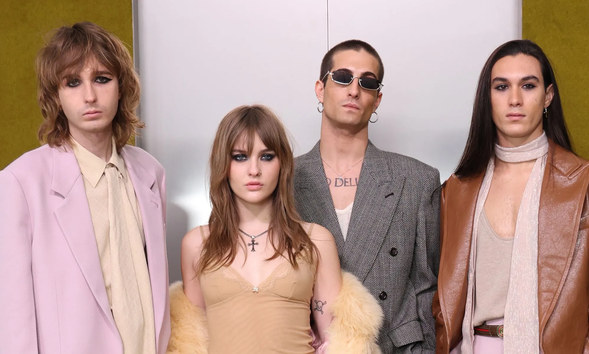

bandas de Rock
Måneskin

Måneskin é uma banda de hard rock italiana formada em Roma no ano de 2016. Elas é composta por quatro membros, o vocalista
Damiano David, a baixista Victoria De Angelis, o baterista Ethan Torchio e o guitarrista Thomas Raggi.
Linkin Park
Capital Inicial